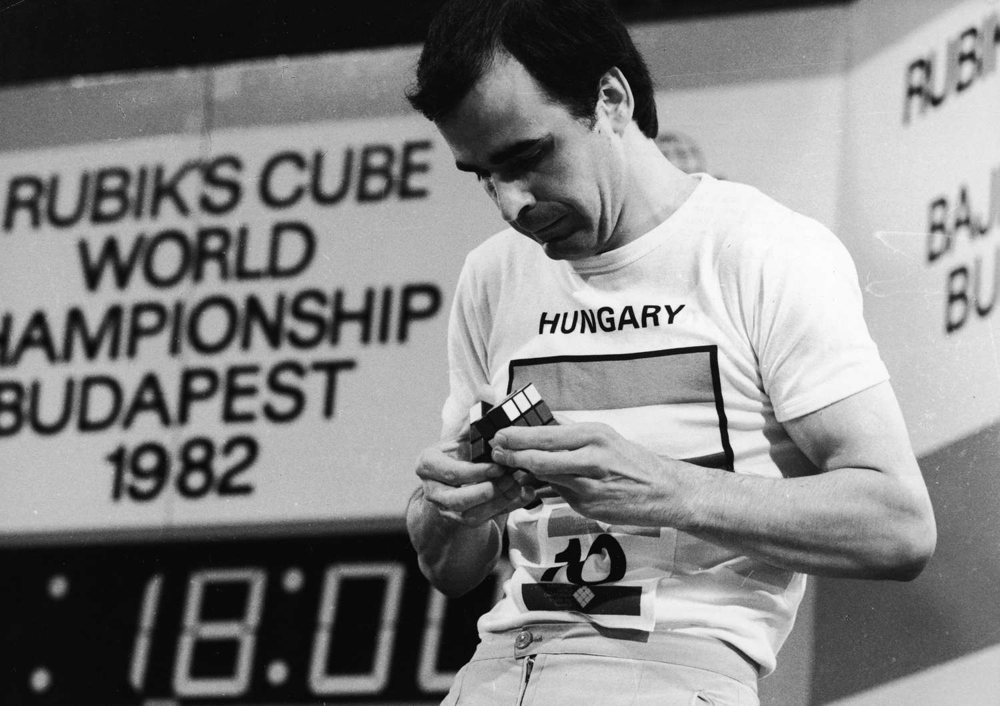
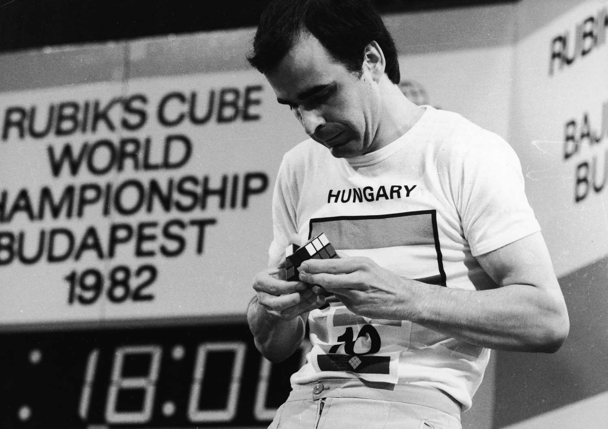
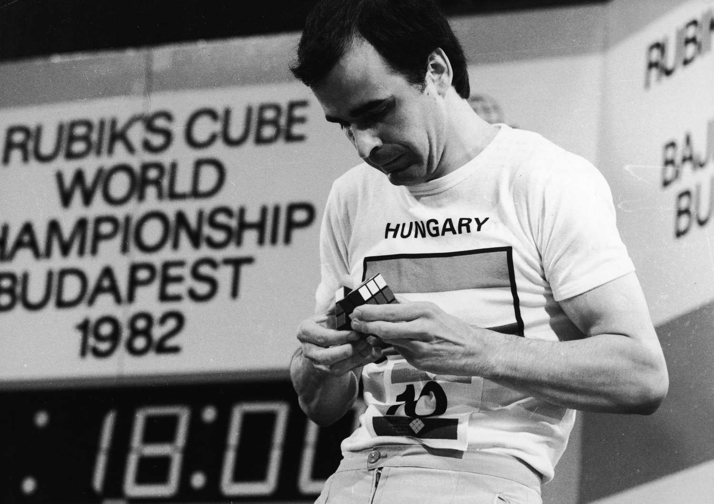

In the mid-1970s, Ernő Rubik worked at the Department of Interior Design at the Academy of Applied Arts and Crafts in Budapest. Although it is widely reported that the Cube was built as a teaching tool to help his students understand 3D objects, his actual purpose was solving the structural problem of moving the parts independently without the entire mechanism falling apart. He did not realise that he had created a puzzle until the first time he scrambled his new Cube and then tried to restore it. Rubik applied for a patent in Hungary for his "Magic Cube" on 30 January 1975, and HU170062 was granted later that year. The first test batches of the Magic Cube were produced in late 1977 and released in Budapest toy shops. Magic Cube was held together with interlocking plastic pieces that prevented the puzzle from being easily pulled apart, unlike the magnets in Nichols's design. With Ernő Rubik's permission, businessman Tibor Laczi took a Cube to Germany's Nuremberg Toy Fair in February 1979 in an attempt to popularise it. It was noticed by Seven Towns founder Tom Kremer, and they signed a deal with Ideal Toys in September 1979 to release the Magic Cube worldwide. Ideal wanted at least a recognisable name to trademark; that arrangement put Rubik in the spotlight because the Magic Cube was renamed after its inventor in 1980.

Since the 1980s, the Rubik’s Cube has captivated the minds of puzzle solvers around the globe. But how did one of the world’s most addictive and prolific puzzles come to be? It all began in the beautiful city of Budapest, in the beautiful mind of Ernő Rubik, a design and architecture lecturer looking for a tactile way to teach his students about three-dimensional space. But the story’s real “twist” came when the creator had to engineer a solution to his self-made conundrum. Think you have what it takes to crack the code? Take it up with the master himself.